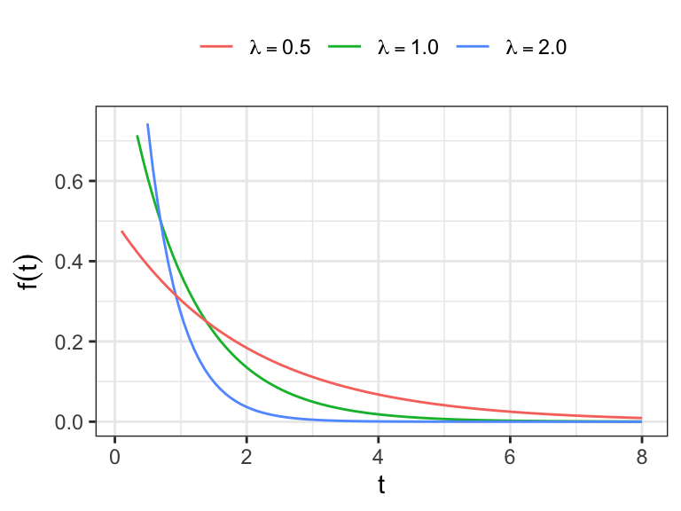
Chapter 1
(AST305) Lifetime Data Analysis I
1 Basic Concepts and Models
1.1 Introduction
Lifetime Data
Lifetime data have important use in many research areas, including health sciences, engineering, social sciences, etc.
Applications range from investigating the durability of manufactured products to studying human diseases and their treatments.
Lifetime data are also known as “survival time data” or “failure time data”
Example 1.1.1 – Engineering
- Manufactured items (mechanical or electronic) are often tested for durability.
- Items are operated under controlled conditions and observed until they fail.
- Here, lifetimes are referred to as “failure times.”
Example 1.1.3 – Medical Studies
- For patients with potentially fatal diseases, the key outcome is survival time, usually measured from diagnosis or treatment.
- Treatments are often compared using the distribution of survival times.
Example 1.1.4 – Laboratory Experiments
- In carcinogenic studies, laboratory animals are exposed to substances and followed until tumors appear.
- The primary outcome is time to tumor appearance.
Time Origin and Time Scale
Time Origin
- The zero point from which survival time is measured for each subject.
- Marks the start of follow-up.
- Examples: In a medical study, time origin can be the date of diagnosis; in a clinical trial, the date of randomization; and in an employment study, the date of recruitment, all marking when the follow-up clock starts.
-
Key Points
- Must be clearly defined
- Can differ between individuals (rolling recruitment)
Time Scale
- The metric used to measure time from the time origin.
- Determines the unit and meaning of “time” in the model.
-
Common Time Scales:
- Time since study entry (follow-up duration from study start, in hours, minutes, seconds etc.)
- Attained age (participant’s actual age at each point in follow-up).
- Time need not always be chronological:
- Miles driven for a vehicle until breakdown.
- Number of pages printed for a printer or photocopier.
Censoring
- In practice, full observation of lifetimes may not be feasible.
- If we only know a subject’s lifetime exceeds a certain value, it is a censored observation.
- Example: A life test stops after 28 days. If an item has not failed, its lifetime is known only as “greater than 28 days.”
- Types of censoring: right, left, and interval censoring (details in next chapter).
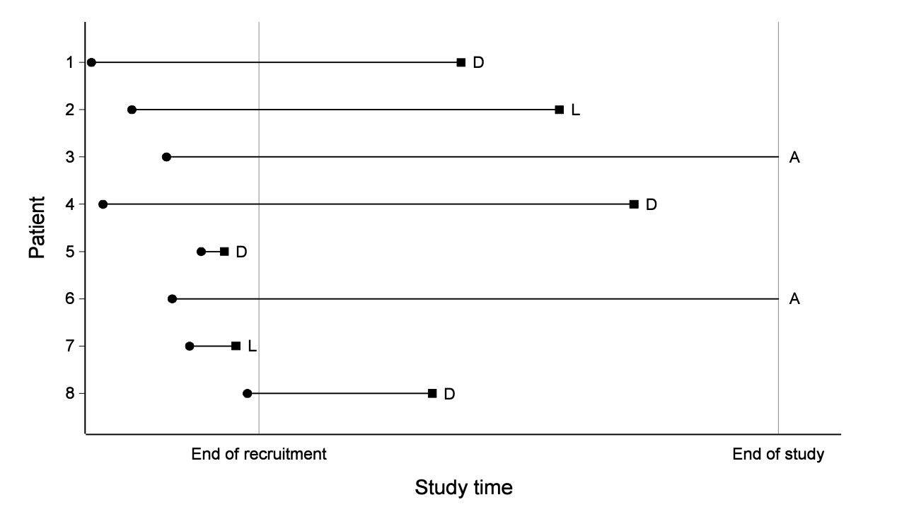
Example 1.1.5 – Electrical Insulating Fluid
- Nelson (1972) studied electrical insulating fluid under constant voltage stress.
- Failure time (time to breakdown) was recorded.
- Specimens were tested at different voltages (26–38 kV).
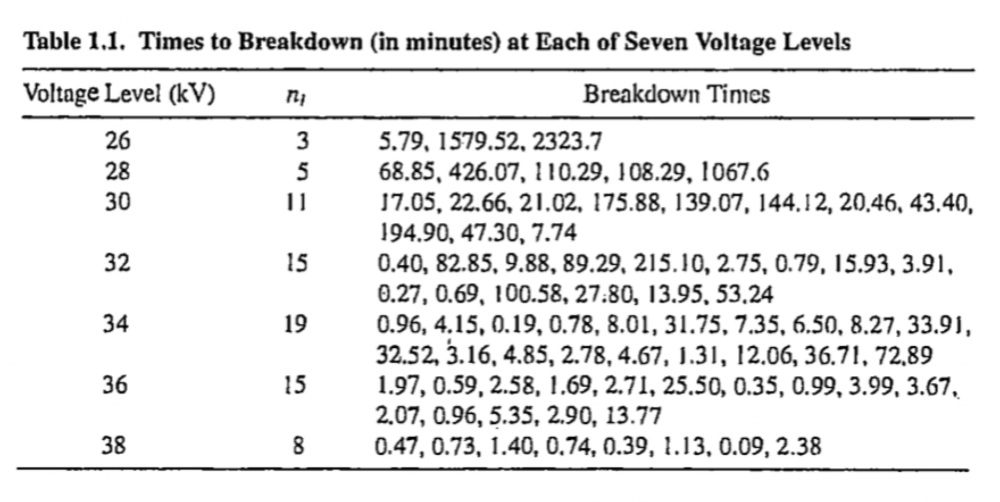
- Key result: Higher voltage \(\rightarrow\) shorter breakdown times.
- If testing had stopped at 180 minutes, some observations would have been censored (true failure times unknown but >180 minutes).
Example 1.1.7 – Clinical Trial (Leukemia)
- Gehan (1965) compared 6-mercaptopurine (6-MP) with placebo in acute leukemia patients.
- Outcome: remission time – the duration patients remained in remission (a state where symptoms reduce or disappear, but the disease may return later).
- Two groups of 21 patients each (placebo vs. 6-MP).
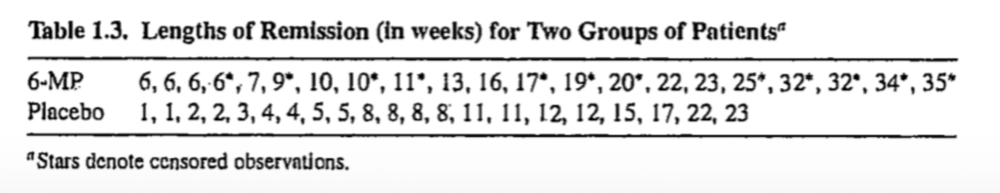
1.2 Lifetime Distributions
Cumulative Distribution Function (CDF)
Let \(T\) be a nonnegative random variable representing lifetimes of individuals in a population.
The probability density function (pdf) of \(T\) is denoted by \(f(t)\), and the cumulative distribution function (cdf) of \(T\) is defined as
\[ F(t) = \Pr(T \leq t) = \int_0^t f(x)\,dx, \quad t \geq 0 \]
Survivor Function
The probability that an individual survives beyond time \(t\) is \[ S(t) = \Pr(T > t) = \int_t^\infty f(x)\,dx \]
In reliability engineering (e.g., lifetimes of machines), \(S(t)\) is also called the reliability function.
-
Properties of \(S(t)\):
- \(S(0)=1\) (everyone is alive at the start).
- \(S(t)\) is monotone decreasing.
- \(\lim_{t\to\infty} S(t) = 0\).
- A useful relationship between mean survival and the survivor function:
\[ E(T) = \int_0^\infty S(x)\,dx \]
This shows that the mean survival time equals the area under the survivor curve.
Quantiles
The \(p^\text{th}\) quantile of \(T\) is the time \(t_p\) such that \[ F(t_p) = \Pr(T \leq t_p) = p \quad {\color{red}\Rightarrow} \quad t_p = F^{-1}(p) = S^{-1}(1-p) \]
-
Special cases:
- \(t_p\) is also the \(100p^\text{th}\) percentile.
- The 0.5 quantile (\(t_{0.5}\)) is the median lifetime.
Mortality Rate
- In life tables, the mortality rate at time \(t\) is the probability of dying between \(t\) and \(t+1\) among those alive at time \(t\):
\[ q_t = \Pr(t \leq T < t+1 \,\vert\, T \geq t) \]
-
Properties:
- Mortality rate is a probability, so \(0 \leq q_t \leq 1\).
- As the interval shrinks, mortality rate leads to the hazard function.
Hazard Function
- Defined as the instantaneous failure rate at time \(t\), conditional on survival up to \(t\):
\[ h(t) = \lim_{\Delta t\to 0} \frac{\Pr(t \leq T < t+\Delta t \mid T \geq t)}{\Delta t} = \frac{f(t)}{S(t)} \]
-
Key points:
- Hazard is a rate, not a probability → it can take values from \(0\) to \(\infty\).
- It represents the instantaneous risk of failure at time \(t\).
- Approximation:
\[\Pr(t\le T<t+\Delta t\mid T\ge t)\approx h(t)\Delta t\]
Alternative interpretation: for small \(\Delta t\), \(h(t)\,\Delta t\) approximates the conditional failure probability over \([t, t+\Delta t)\).
Other names: force of mortality, conditional failure rate.
Suppose we are told that for a certain interval of length \(\Delta t\), the probability of failure is \[ P = \Pr(t \leq T < t+\Delta t \mid T \geq t) = \tfrac{1}{4}. \]
To get the corresponding hazard rate, divide by \(\Delta t\): \[ h(t) \approx \frac{P}{\Delta t} \]
Then the hazard depends on the interval length:
| \(P\) | \(\Delta t\) | \(P/\Delta t\) (rate) |
|---|---|---|
| 1/4 | 1/3 day | \(0.75\)/day |
| 1/4 | 1/21 week | \(5.25\)/week |
Relationship Between Different Functions
The four functions \(f(t)\), \(F(t)\), \(S(t)\), and \(h(t)\) are mathematically equivalent ways of describing the distribution of \(T\).
From a given expression of one function, say hazard function, expressions of other functions (e.g. density function) can be derived
Expressing \(S(t)\) in terms of \(h(t)\)
\[ \begin{aligned} h(x) &= \frac{f(x)}{S(x)} = -\frac{d}{dx}\log S(x) \\ \int_0^t h(x) \,dx & = \int_0^t \Big[ -\frac{d}{dx}\log S(x) \Big]dx \\ -\int_0^t h(x) \,dx & = \log S(x) \bigg \vert_0^t \\ -\int_0^t h(x) \,dx & = \log S(t) - \log S(0) \end{aligned} \]
Since \(S(0)=1\),
\[ S(t) = \exp\Big(-\int_0^t h(x)\,dx \Big) \]
Cumulative Hazard Function
It is useful to define the cumulative hazard function as \[ H(t) = \int_0^t h(x)\,dx \]
Relationship with survivor function: \[ S(t) = \exp[-H(t)] \quad \Rightarrow \quad H(t) = -\log S(t) \]
-
Notes:
- \(S(\infty)=0 \Rightarrow H(\infty)=\infty\).
- It is possible for \(H(t)>1\) (since it is not a probability).
For a given time \(t\), the greater the risk, the smaller \(S(t)\), and hence the shorter mean survival time \(E(T)\), and vice verse
It is possible for the cumulative hazard function to exceed unity \[ \begin{aligned} H(t) \geq 1 \;\Rightarrow\; -\log\,S(t) \geq 1 \;\Rightarrow\; S(t) \leq e^{-1} = 0.368 \end{aligned} \]
The cumulative hazard is then greater than unity when the probability of an event occurring after time \(t\) is less than 0.37
Relationship Between Different Functions
Expressing \(f(t)\) in terms of \(h(t)\)
\[ \begin{aligned} h(t) & = \frac{f(t)}{S(t)} \\ f(t) & = h(t) S(t) = h(t)\, \exp\Big(-\int_0^t h(x) \,dx \Big) \end{aligned} \]
Example 1.2.1
-
Suppose \(T\) has pdf \[ f(t) = \beta t^{\beta-1} \exp(-t^\beta), \quad t > 0 \]
- Obtain survivor function and hazard function of \(T\)
Discrete Models: Motivation
- Sometimes lifetimes are measured in cycles or intervals (e.g., weeks, months, visits).
- Then \(T\) is a discrete random variable.
- Possible values: \(t_1, t_2, \dots\), with \(0 = t_0 < t_1 < t_2 < \cdots\).
Discrete Probability Functions
Probability mass function (pmf): \[ f(t_j) = \Pr(T = t_j), \quad j=1,2,\dots \]
Survivor function: \[ S(t) = \Pr(T \geq t) = \sum_{j: t_j \geq t} f(t_j) \]
-
Properties:
- Step function (non-increasing).
- Left-continuous.
- \(S(0)=1,\; S(\infty)=0\).
Note: In continuous-time settings we often write \(S(t)=\Pr(T>t)\) (right-continuous); here, with discrete times, \(S(t)=\Pr(T\ge t)\) is left-continuous.
Discrete Hazard Function
- Defined as \[ h(t_j) = \Pr(T = t_j \mid T \geq t_j) = \frac{f(t_j)}{S(t_j)}. \]
- Interpretation: probability of failing at time \(t_j\) given survival up to that time.
- Range: \(0 \leq h(t_j) \leq 1\).
- Unlike continuous hazard, this is a probability, not rate.
- Connection to survivor:
\[ h(t_j) = 1 - \frac{S(t_{j+1})}{S(t_j)}. \] - since \(f(t_j) = S(t_j) - S(t_{j+1})\)
- Survivor in terms of hazards:
\[ S(t) = \prod_{t_j < t} [1 - h(t_j)]. \]
Intuition
To survive until \(t_j\): must “not fail” at earlier times \([1-h(t_1)], [1-h(t_2)], \dots, [1-h(t_{j-1})]\).
- pmf in terms of hazards:
\[ f(t_j) = h(t_j) \prod_{i=1}^{j-1} [1 - h(t_i)]. \]
Intuition
To fail exactly at \(t_j\): multiply survival so far by hazard at \(t_j\).
Some Remarks on Hazard Functions
The hazard function is an important characteristic of a lifetime distribution that indicates the way the risk of failure varies with age or time, and this is of interest in most applications.
In many instances, information is available on how failure rates change with time and such prior information about the shape of the hazard function can help guide model selection.
The model/information for hazard function can easily be translated for survivor and density functions using the formulas derived earlier
Different Shapes of Hazard Functions
-
The shapes of hazard functions could be different, such as
monotone increasing (e.g. positive aging)
(a)monotone decreasing (e.g. negative aging)
(b)bathtub-shaped or U-shaped (e.g. age at death of human populations, lifetime of manufactured items, etc.)
(c)inverse bathtub-shaped (e.g. survival after treatment for cancer, duration of marriage, etc.)
(d)
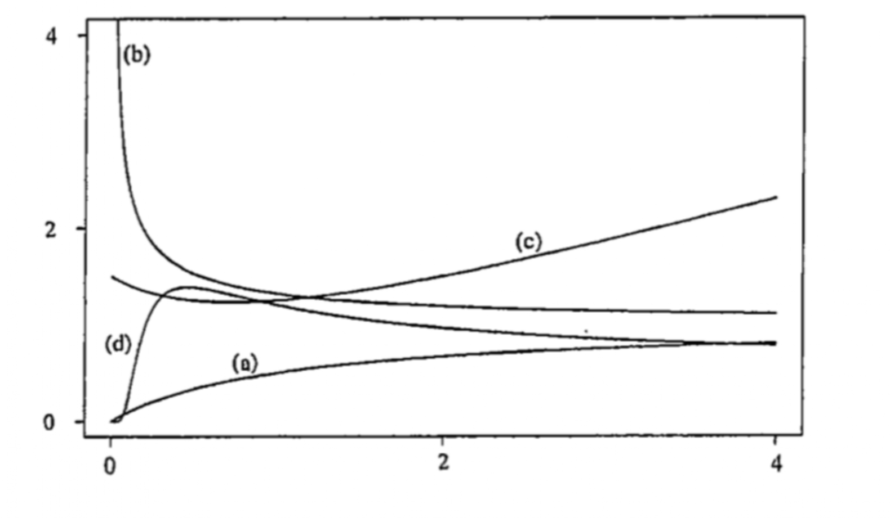
Different Shapes of Density Functions
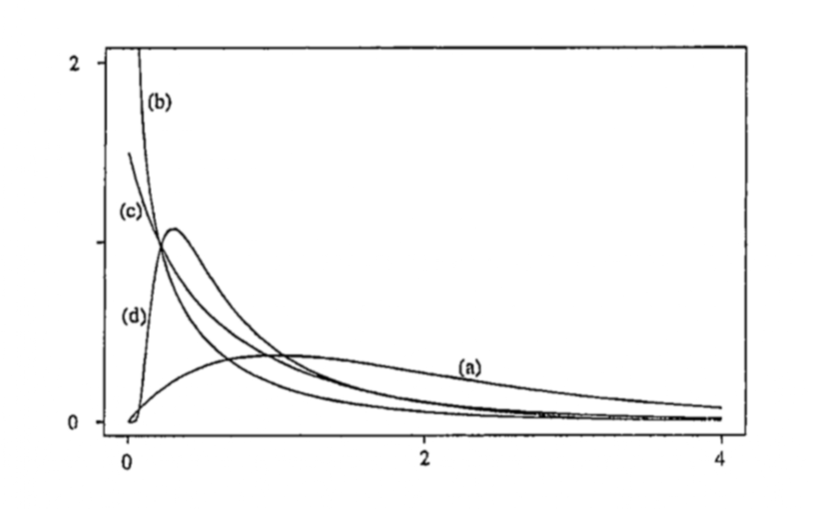
Some Remarks on Hazard Functions
Shapes of density function could be different corresponding to the shapes of hazard functions
Although different survivor functions can have the same basic shape, their hazard functions can differ dramatically
The hazard function is usually more informative about the underlying mechanism of failure than the survivor function.
Modelling the hazard function is an important method for summarizing survival data
1.3 Some Important Failure Time Models
Introduction
In survival analysis, parametric models are often used to describe lifetime data.
Only a few distributions have proven useful across many applications.
-
The most common univariate models are:
- Exponential
- Weibull
- Log-normal
- Log-logistic
- Exponential
-
Notations
\(T\,\rightarrow\) lifetime, takes only nonnegative values, i.e. from 0 to \(\infty\)
\(Y = \log T\,\rightarrow\) log-lifetime, takes any value on the real line, i.e. from \(-\infty\) to \(\infty\)
The Exponential Distribution
-
The exponential distribution is characterized by a constant hazard function \[h(t) = \lambda, \;t\geq 0 \]
- \(\lambda >0\)
The cumulative hazard function \[ H(t) = \int_0^t h(x)\,dx = \int_0^t \lambda\,dx = \lambda t \]
The survivor function \[ \begin{aligned} S(t) &= \exp(- H(t)) \\ & = \exp(-\lambda t) \end{aligned} \]
The probability density function \[ \begin{aligned} f(t) & = {\color{red} h(t)}\,{\color{blue} S(t)} = {\color{red}\lambda}\,{\color{blue}\exp(-\lambda t)} \end{aligned} \]
Reparameterization \(\theta = \lambda^{-1}\) Then, \(T\sim \text{Exp}(\text{scale}=\theta)\), where
\[ f(t) = (1/\theta)\,\exp(-t/\theta), \;\;t\geq 0 \]
-
Properties
\(E(T) = \theta\)
\(V(T) = \theta^2\)
-
Quantiles, the \(p\)th quantile \[ \begin{aligned} F(t_p) = p & \;\Rightarrow \;1 - \exp(-t_p/\theta) = p \; \\ & \; \Rightarrow {\color{purple} t_p = -\theta \log(1-p)} \end{aligned} \]
- The median, \(.5th\) quantile \[ t_{.5} = -\theta\log(.5) \]
The exponential distribution with \(\theta = 1\) is known as standard exponential distribution
-
If \(T\sim \text{Exp}(\theta)\) then \[ (T/\theta)\sim \text{Exp}(1) \]
The mean and variance of \(\text{Exp}(1)\) is 1
The median of the \(\text{Exp}(1)\) is \(-\log(.5)=0.6931\)
The density function of \(\text{Exp}(1)\) is positively skewed
-
Historically, the exponential was the first widely discussed lifetime distribution model
- This was in part because of the availability of simple statistical methods for it
The assumption of a constant hazard function is very restrictive, so the model’s applicability is fairly limited
The Weibull Distribution
The Weibull distribution is the most widely used lifetime distribution model.
-
It has applications to the lifetimes or durability of manufactured
- It is used as a model with diverse types of items, such as ball bearings, automobile components, and electrical insulation.
It is also used in biological and medical applications, for example, in studies on the time to the occurrence of tumors in human populations or in laboratory animals.
The hazard function of Weibull distribution \[ h(t)=\lambda\beta(\lambda t)^{\beta-1},\;\lambda>0,\;\beta>0. \]
-
Show that \(h(t)\) is
monotone increasing for \(\beta>1\)
monotone decreasing for \(\beta<1\)
constant for \(\beta=1\)
-
Exponential distribution is a special case
- For \(\beta=1\), Weibull distribution reduces to exponential distribution with \(h(t)=\lambda\)
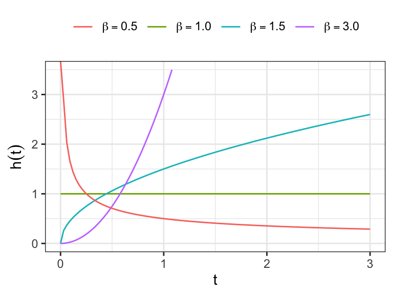
The cumulative hazard function \[ H(t)=\int_0^t \,h(x)\,dx= \int_0^t \lambda\beta\, (\lambda x)^{\beta-1}\,dx=(\lambda\,t)^{\beta} \]
The survivor function \[ S(t) = \exp[-H(t)] = \exp[-(\lambda t)^\beta] \]
The density function \[ f(t) = h(t)\, S(t) = \lambda\beta\, (\lambda t)^{\beta-1}\exp[-(\lambda t)^\beta] \]
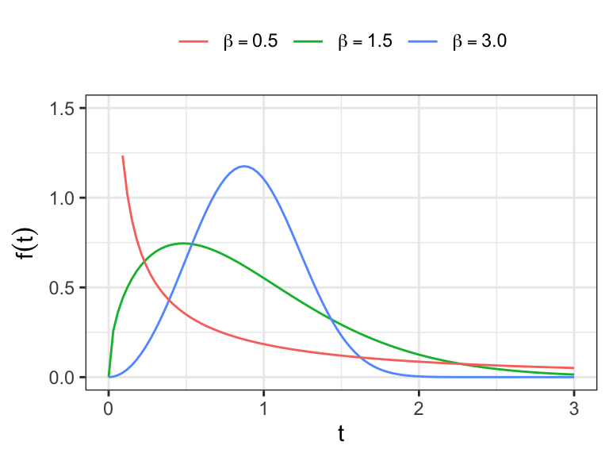
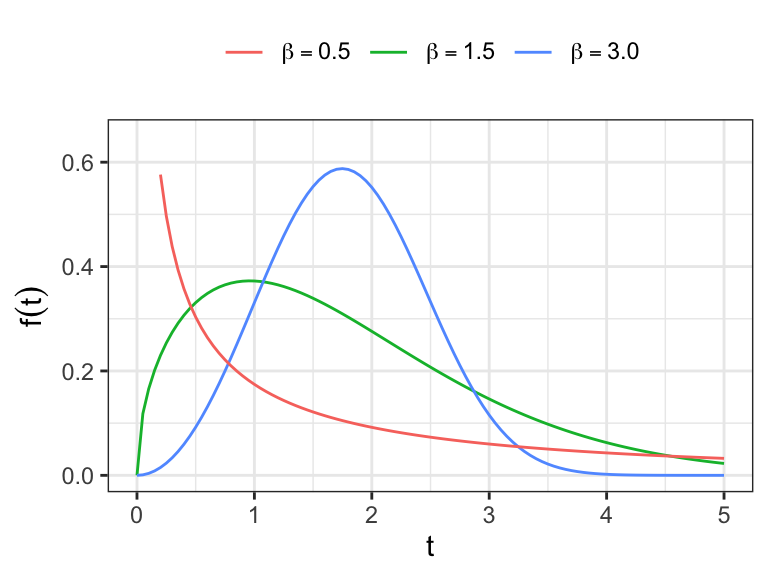
-
Show that the \(r^\text{th}\) moment of Weibull distribution \[E(T^r) = \lambda^{-r}\Gamma{(1 + r/\beta)}\]
- Obtain the expressions of \(E(T)\) and \(V(T)\)
-
The \(p^{\text{th}}\) quantile can be obtained as \[ \begin{aligned} F(t) &= 1-e^{-(\lambda t_p)^{\beta}}=p \\ \Rightarrow\ t_p & =\alpha[-\log(1-p)]^{1/\beta}, \qquad \text{where} \,\, \alpha=1/\lambda \end{aligned} \]
\(\alpha = 1/\lambda\) is known as the scale parameter of the distribution
The shape of the distribution depends on \(\beta\), which is known as the shape parameter
-
It can be shown that \(\alpha\) is the .632 quantile of the distribution irrespective of the value of \(\beta\)
- i.e. \(\alpha\) is greater than the median of the distribution!
The Extreme Value Distribution
Let \(T\) follows a Weibull distribution \[ T\sim \text{Weib}(\alpha, \beta)\;\;\text{with}\;\; \alpha = 1/\lambda \]
Extreme value distribution (also known as Gumbel distribution) is closely related to Weibull distribution
If lifetime \(T\) follows a Weibull distribution then log-lifetime \(Y = \log T\) follows an extreme value distribution
Extreme value distribution has two parameters, which have one-to-one connection with the Weibull distribution parameters!
-
Exercise: If \(T\sim \text{Weib}(\alpha, \beta)\), obtain the pdf of \(Y=\log T\)
- Hints. \(J = \frac{dt}{dy} = e^y\) and \[ f_Y(y) = f_T(e^y)\;\vert\, J\,\vert \]
-
\(T \sim \text{Weib}(\alpha, \beta)\;\;\Leftrightarrow\;\;Y = \log T\sim \text{EV}(u, b)\)
\(u = \log\alpha\) and
\(b = (1/\beta)\)
-
The pdf of \(Y\) \[ f(y) = (1/b)\exp\Big[\frac{y-u}{b}-\exp\Big(\frac{y-u}{b}\Big) \Big]\;\;-\infty< y <\infty \]
- \(-\infty < u < \infty\) and \(b>0\)
The survivor function \[ \begin{aligned} S(y) &= \int_y^{\infty} f(x) \,dx \\ & = \int_y^{\infty} (1/b)\exp\Big[\frac{x-u}{b}-\exp\Big(\frac{x-u}{b}\Big) \Big]\,dx \\ & = \exp\Big[-\exp\Big(\frac{y - u}{b}\Big)\Big] \end{aligned} \]
The cumulative hazard function \[ H(y) = \exp\Big(\frac{y-u}{b}\Big) \]
The hazard function \[ h(y) = \frac{d\,H(y)}{dy} = (1/b)\exp\Big(\frac{y-u}{b}\Big) \]
Standard extreme value distribution
- If \(Y\sim \text{EV}(u, b)\), then \[ \frac{Y-u}{b} \sim \text{EV}(0, 1), \] the standard extreme value distribution.
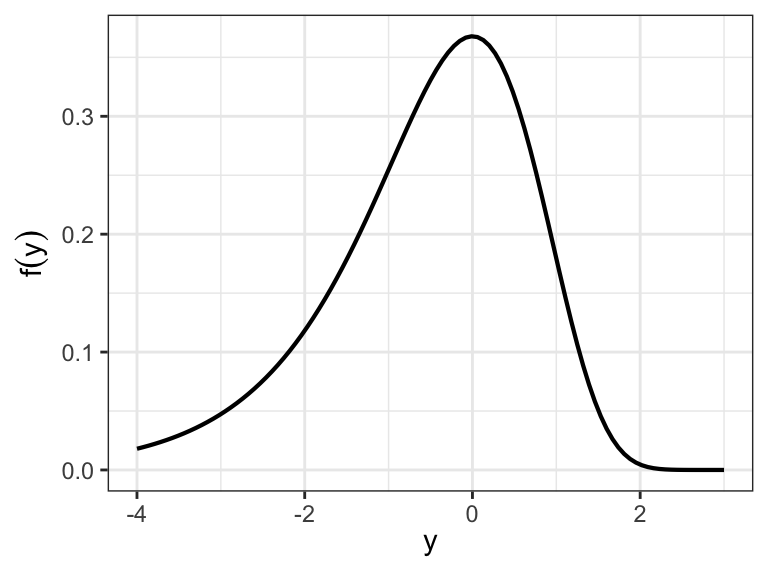
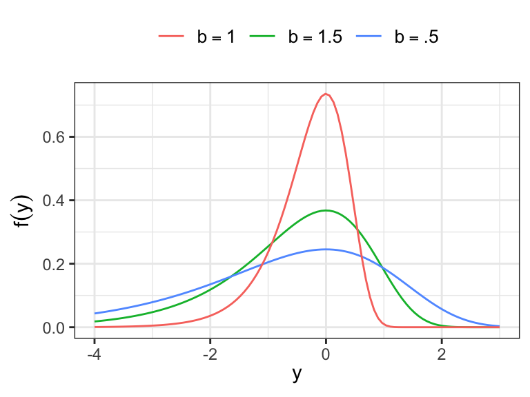
- The moment generating function of \(EV(u, b)\) \[ \begin{aligned} M_Y(\theta) = E[e^{\theta Y}] &= \int_{-\infty}^\infty e^{\theta y} \,f(y)\, dy\\ & = \int_{-\infty}^\infty e^{\theta y}\,(1/b)\,\exp\Big[\frac{y-u}{b} - \exp\Big(\frac{y-u}{b}\Big)\Big]dy \end{aligned} \]
\[ = \int_{-\infty}^\infty e^{\theta(u + bz)}\exp\big[z - \exp(z)\big]dz \qquad [ \text{let} \,\,\, \frac{y-u}{b} = z] \]
\[ = \int_0^\infty e^{\theta u}\, x^{\theta b}\, e^{-x}\, dx = e^{\theta u}\,\Gamma{(\theta b + 1)}, \qquad [\text{let} \,\,\, e^z =x] \]
If \(Y\sim EV(u, b)\) \[ M(\theta) = e^{\theta u}\, \Gamma(\theta b + 1) \]
If \(Y\sim EV(0, 1)\) \[ M(\theta) = \Gamma(\theta + 1) \]
Moments of standard extreme value distribution \(Z\sim EV(0, 1)\) \[ \begin{aligned} E(Z) &= \frac{d}{d\theta}M(\theta)\big\vert_{\theta=0}=\Gamma'(1)=-\gamma\;\; (\text{Euler's constant})\\ V(Z) & = \Gamma''(1) - \gamma^2 = \pi^2/6 \end{aligned} \]
For \(Y \sim EV(u, b)\), show that \[ E(Y) =u - \gamma b\;\;\text{and}\;\; V(Y) = b^2(\pi^2/6) \]
The \(p^\text{th}\) quantile of extreme value distribution
\[ \begin{aligned} F(y_p) & = p \\ S(y_p) &= 1-p \\ \exp\Big[-\exp\Big(\frac{y_p-u}{b}\Big) \Big] &= (1-p)\\ %\frac{y_p-u}{b} & = \log\big[-\log(1-p)] \\ y_p & = u + b\log\big[-\log(1-p)] \end{aligned} \]
- Show that the location parameter \(u\) is the .632 quantile of \(Y\sim EV(u, b)\)
The Log-normal Distribution
The lifetime \(T\) is said to be log-normally distributed if log-lifetime \(Y=\log T\) is normally distributed.
The parameters of normal distribution \(\mu\) and \(\sigma\) are also considered as the parameters of log-normal distribution \[ \begin{aligned} Y &=\log T \sim N(\mu, \sigma^2) \\ \Rightarrow\; T &= \exp(Y)\sim \log N(\mu, \sigma^2) \end{aligned} \]
- Let \(Y=\log T \sim N(\mu, \sigma^2)\), show that the density function of \(T=\exp(Y)\) is \[
\begin{aligned}
f_T(t) &= f_Y(\log T) \bigg\vert \frac{dy}{dt}\bigg\vert \\
& = \frac{1}{\sigma t\sqrt{2\pi}}\exp\Bigg[-\frac{1}{2}\Bigg(\frac{\log t - \mu}{\sigma}\Bigg)^2 \Bigg]
\end{aligned}
\]
- \(t>0\), \(\sigma>0\), and \(-\infty < \mu < \infty\)
-
The survivor function of \(T=\exp(Y)\) \[ S(t) = 1 - \Phi\bigg(\frac{\log t - \mu}{\sigma}\bigg) \]
- \(\Phi(\cdot)\;\rightarrow\) distribution function of \(N(0, 1)\)
The hazard function is defined as \(f(t)/S(t)\), which takes the value 0 at \(t=0\), increases to a maximum and then decreases, approaching 0 as \(t\to \infty\).
It can be shown \[ \begin{aligned} E(T) &= \exp(\mu + \sigma^2/2)\\ V(T)&=[\exp(\sigma^2)-1][\exp(2\mu + \sigma^2)] \end{aligned} \]
-
For log-normal distribution
\(\exp(\mu)\;\rightarrow\) the scale parameter
\(1/\sigma\;\rightarrow\) the shape parameter
Show that for \(T\sim \log N(\mu,\sigma^2)\) \[ t_{.5} = \exp(\mu) \]
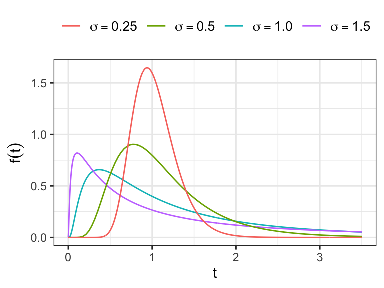
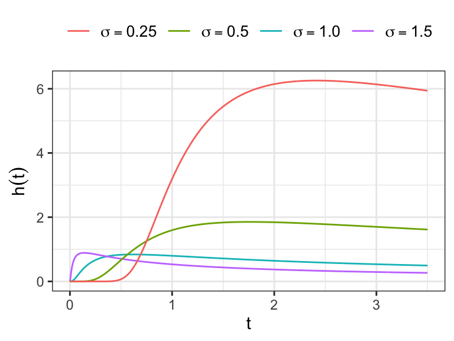
The Log-logistic distribution
If \(Y = \log T\) follows a logistic distribution then \(T\) follows a log-logistic distribution
The probability density function of a logistic distribution is a unimodal, bell-shaped curve symmetric around its mean, and for location parameter \(u\) and scale parameter \(b\) it is given by
\[ f(y) = \frac{e^{(y-u)/b}}{b \,[1 + e^{(y-u)/b}]^2}. \]
- \(-\infty < y <\infty\), \(-\infty < u < \infty\), \(b>0\)
The survivor function of a logistic distribution is \[ \begin{aligned} S(y)=\int_{y}^{\infty} f(x)\,dx &= \int_{y}^{\infty} \frac{e^{(x-u)/b}}{b\,[1+e^{(x-u)/b}]^{2}}\,dx. \\ & = \cdots \\ &=\frac{1}{\big[1 + e ^ {(y-u)/b}\big]} \end{aligned} \]
The hazard function of logistic distribution is \[ h(y) = \frac{f(y)}{S(y)} = \frac{e^{(y-u)/b}}{b \,[1 + e^{(y-u)/b}]}. \]
-
The pdf of log-logistic distribution \[ \begin{aligned} f_T(t) &= f_Y(\log T)\,\Big\vert \frac{dy}{dt}\Big\vert\\ & = \frac{\beta}{\alpha} \frac{(t/\alpha)^{\beta-1}}{\big[1+ (t/\alpha)^\beta\big]^2} \end{aligned} \]
- \(\alpha = \exp(u)\) and \(\beta = 1/b\)
-
The survivor function of \(T\sim \text{LLogis}(\alpha, \beta)\) is \[ \begin{aligned} S(t) &= \int_t^\infty \frac{\beta}{\alpha}\frac{(x/\alpha)^{\beta-1}}{\big[1+ (x/\alpha)^\beta\big]^2}\, dx \end{aligned} \]
- Let \((x/\alpha)^\beta=y\) \[ \begin{aligned} S(t) &= \int_{(t/\alpha)^\beta}^\infty \frac{1}{(1+ y)^2}\, dy\\ & = \frac{-1}{1+ y}\Bigg\vert_{(t/\alpha)^\beta}^\infty\\ & = \big[1+ (t/\alpha)^\beta \big]^{-1} \end{aligned} \]
The pdf \[ f(t) = \frac{\beta}{\alpha}\frac{(t/\alpha)^{\beta-1}}{\big[1+ (t/\alpha)^\beta\big]^2} \]
The survivor function \[ S(t) = \big[1+ (t/\alpha)^\beta \big]^{-1} \]
The hazard function \[ h(t)= \frac{\beta}{\alpha} \frac{(t/\alpha)^{\beta-1}}{\big[1+ (t/\alpha)^\beta\big]} \]
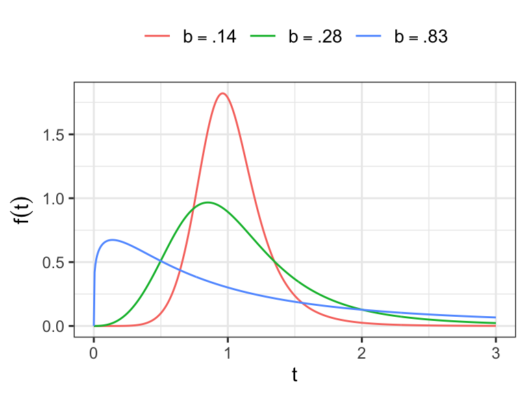
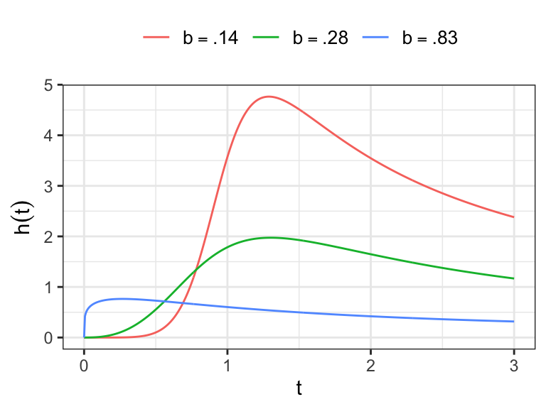
- Show that for \(T\sim \text{LLogis}(\alpha, \beta)\), provided \(\beta>r\) \[ \begin{aligned} E(T^{r}) &= \int_{0}^{\infty} t^{r}\; \frac{\beta}{\alpha}\, \frac{(t/\alpha)^{\beta-1}}{\big(1+(t/\alpha)^{\beta}\big)^2} \, dt. \\ &= \cdots \\ &= \alpha^r\,\Gamma \bigg(\frac{r}{\beta} +1\bigg)\Gamma \bigg(1-\frac{r}{\beta}\bigg) \end{aligned} \]
You might have to recognize and use a Beta integral.
Beta (first kind): for \(0<x<1\), \[ \int_{0}^{1} x^{\alpha-1}(1-x)^{\beta-1}\,dx = \mathrm{B}(\alpha,\beta) = \frac{\Gamma(\alpha)\Gamma(\beta)}{\Gamma(\alpha+\beta)}. \]
Beta function (second kind / Beta prime): \[ \int_{0}^{\infty} \frac{x^{a-1}}{(1+x)^{a+b}}\,dx = \frac{\Gamma(a)\,\Gamma(b)}{\Gamma(a+b)}, \quad a>0,\,b>0. \]
Log-logistic hazard shape
For \(\beta>1\): \(h(0)=0\), increases to a maximum, then decreases to \(0\) as \(t\to\infty\) (unimodal hazard).
For \(\beta=1\): \(h(t)=1/(\alpha+t)\), strictly decreasing.
For \(0<\beta<1\): \(h(t)\) is monotone decreasing (starts at \(\infty\)).
The Gamma Distribution
- The gamma distribution has a pdf of the form \[
f(t) = \frac{\lambda(\lambda t)^{k-1}\,e^{-\lambda t}}{\Gamma(k)}\;\;\;t>0
\]
- shape \(k>0\)
- rate \(\lambda >0\) (scale \(1/\lambda\))
- For \(k=1\), gamma distribution reduces to exponential distribution
- Regularized lower incomplete gamma function
\[ I(k, x) = \frac{1}{\Gamma(k)}\int_0^x u^{k-1}\, e^{-u}\, du \]
Survivor function \[ S(t) = \int_t^\infty \frac{\lambda(\lambda x)^{k-1}\,e^{-\lambda x}}{\Gamma(k)}\, dx \]
Let \(y=\lambda x\) \[ S(t) = \frac{1}{\Gamma(k)}\int_{\lambda t}^\infty y^{k-1}\,e^{-y}\,dy=1-I(k, \lambda t) \]
Gamma hazard shape
The hazard function \[ h(t) = \frac{f(t)}{S(t)} \]
- For \(k>1\): \(h(0)=0\), \(h(t)\) increases, \(\displaystyle \lim_{t\to\infty}h(t)=\lambda\).
- For \(k=1\): \(h(t)\equiv \lambda\).
- For \(0<k<1\): \(h(t)\) decreases, \(\displaystyle \lim_{t\to 0}h(t)=\infty\), \(\displaystyle \lim_{t\to\infty}h(t)=\lambda\).
In short: Gamma has increasing hazard rate for \(k>1\), constant for \(k=1\), and decreasing hazard rate for \(0<k<1\)
The distribution with \(\lambda=1\) is called one-parameter gamma distribution, denoted by \(Ga(k)\), and has pdf \[ f(t) = \frac{t^{k-1}\,e^{-t}}{\Gamma(k)}\;\;\;t>0 \]
-
If \(T\) follows a gamma distribution with scale parameter \(\lambda^{-1}\) and shape parameter \(k\), then show that \(\lambda T\sim Ga(k)\)
- Hints. \(Y=\lambda T\) and \(f_Y(y) = f_T(y/\lambda)\, \vert dt/dy \vert\)
If \(Y\sim Ga(k)\) then \(2Y\sim \chi^2_{(2k)}\)
-
Let \(T_1, \ldots, T_n\) are iid and exponentially distributed with parameter \(\lambda\)
- \(\sum_{i=1}^n T_i\) follows a gamma distribution with parameters \(\lambda\) and \(n\)
The moment generating function of \(Y\sim \text{Ga}(k)\) (rate 1) is
\[ M_Y(\theta)=(1-\theta)^{-k},\ \ \theta<1. \]
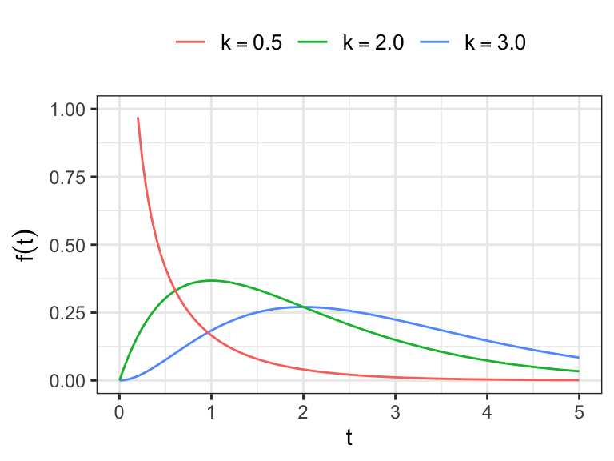
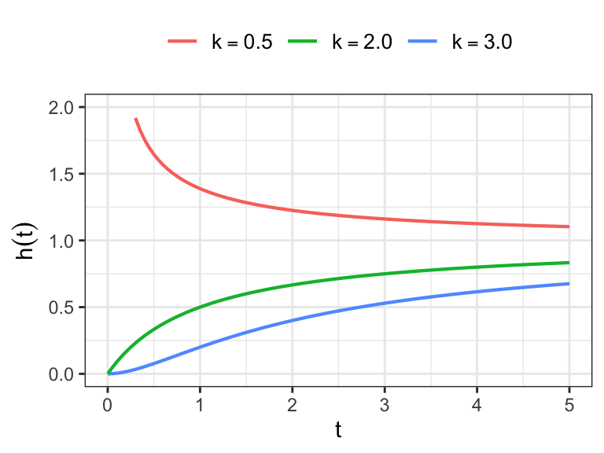
Log-Location-scale Models
Definition: Location Scale Family A location-scale family is a family of distributions formed by translation and rescaling of a standard family member.
-
A parametric location-scale model for a random variable \(Y\) is a distribution with pdf of the form \[ f(y) = \frac{1}{b}\,\,f_0\bigg(\frac{y-u}{b}\bigg)\;\;-\infty<y<\infty \]
\(-\infty<u<\infty\), location parameter
\(b>0\), scale parameter
\(f_0(z)\) is a specified pdf on \((-\infty, \infty)\)
The cumulative distribution function of \(Y\) \[ \begin{aligned} F(y) &= \int_{-\infty}^y (1/b)\, f_0\bigg(\frac{x-u}{b}\bigg)\,dx \\[.25em] & = \int^{(y-u)/b}_{-\infty} f_0(z)\,dz \\[.25em] & = F_0\bigg(\frac{y-u}{b}\bigg) \end{aligned} \]
Similarly, the survivor function of \(Y\) \[ S(y) = 1 - F_0\bigg(\frac{y-u}{b}\bigg) = S_0\bigg(\frac{y-u}{b}\bigg) \]
-
The distribution of the standardized variable \(Z = (Y-u)/b\)
Probability density function of \(Z\) \[ f_Z(z) = f_Y\bigg(\frac{y-u}{b}\bigg)\,\Big\vert \frac{dy}{dz}\Big\vert = (1/b)\,f_0(z)\,(b) = f_0(z) \]
Survivor function of \(Z\) \[ S_Z(z) = \int_z^\infty f_0(x)\, dx = S_0(z) \]
Cumulative density function of \(Z\) \[ F_Z(z) = F_0(z) \]
- There is an one-to-one correspondence between some lifetime and log-lifetime distributions
Parameters of lifetime distributions \[\text{scale ($\alpha$) and shape ($\beta$)}\]
Parameters of log-lifetime distributions \[\text{location ($u=\log\alpha$) and scale ($b = 1/\beta$)}\]
For the standardized log-lifetimes \(Z=(Y-u)/b\)
The density, cumulative density, and survivor functions can be expressed in terms of \(f_0(\cdot)\), \(F_0(\cdot)\), and \(S_0(\cdot)\), respectively
For example, the survivor functions of log-lifetimes are defined as \[ \begin{aligned} S_0(z) &= \exp(-e^z) \;\longrightarrow\;\text{extreme value}\\[.25em] S_0(z) &= 1- \Phi(z) \;\longrightarrow\;\text{normal}\\[.25em] S_0(z) &= (1 + e^z)^{-1} \;\longrightarrow\;\text{logistic} \end{aligned} \]
-
Using the transformation \(T=\exp(Y)\), lifetime distributions can be obtained from each of the distributions of location-scale family \[ \begin{aligned} S_T(t) &= P(T\geq t)\\[.25em] & = P(\log T \geq \log t) \\[.25em] %& = P\bigg(\frac{Y - u}{b} \geq \frac{\log t - u }{b}\bigg) \\[.25em] & = S_0\bigg(\frac{\log t -u}{b} \bigg) \\[.25em] %& = S_0\bigg(\log\Big(\frac{t}{\alpha}\Big)^\beta\bigg)\\[.25em] & = S_0^\star\bigg(\Big(\frac{t}{\alpha}\Big)^\beta\bigg) \end{aligned} \]
- \(S_0^\star(x) = S_0(\log x)\)
Obtain the survivor function of \(T\sim \text{Weib}(\alpha, \beta)\) from \(Y\sim EV(u, b)\) \[ \begin{aligned} S(t) & = S_0^\star\Big(\big({t}/{\alpha}\big)^\beta\Big) \\[.25em] & = S_0\Big(\log \big({t}/{\alpha}\big)^\beta\Big)\\[.25em] & = \exp\Big(-e^{\log\big(t/\alpha\big)^\beta}\Big)\\[.25em] & = \exp\Big(-{\big(t/\alpha\big)^\beta}\Big) \end{aligned} \]
Similarly, obtain the expressions of survivor function of log-logistic and log-normal distribution using the relationship \(S(\cdot)=S_0^\star(\cdot)\)
1.4 Regression Models
Regression models are used to understand the relationship between lifetime and a set of covariates (e.g. age, gender, disease status, values of bio-markers, etc.), some of which may depend on time
-
Regression models considered for lifetimes can be divided into two broad categories
Parametric models
Semiparametric models
Parametric Regression Models
Parametric models discussed in this chapter (e.g. Weibull, log-logistic, etc.) can be considered for modeling lifetime
In parametric regression model, one of the parameters of the assumed lifetime distribution is expressed as a function of available covariates
Let \(T\) be the lifetime and \(\mathbf{x}=(x_1, \ldots, x_p)'\) be the available \(p\) covariates
Assume \(T\sim \text{Exp}(\theta)\) and since \(\theta>0\), a reasonable model for \(\theta\) would be \[\theta(\mathbf{x}) = \exp\big(\boldsymbol{\beta}'\mathbf{x}\big), \qquad \text{where}\; \boldsymbol{\beta} = (\beta_1, \ldots, \beta_p)'\]
The model specification \(\theta(\mathbf{x}) = \exp\big(\boldsymbol{\beta}'\mathbf{x}\big)\) ensures \(\theta(\mathbf{x}) \geq 0\) for any set of values of \(\boldsymbol{\beta}\) and \(\mathbf{x}\)
For the given set of covariates \(\mathbf{x}\), the survivor function is defined as \[ S(t\,\vert\, \mathbf{x}) = \exp(-t/\theta(\mathbf{x})) \]
If \(Y=\log T\) follows a distribution of location-scale family, the model \(u(\mathbf{x}) = \boldsymbol{\beta}'\mathbf{x}\) would be useful, \(-\infty <u(\mathbf{x})<\infty\)
-
The corresponding survivor function has the form \[ S_Y(y\,\vert\, \mathbf{x}) = P(Y\geq y\,\vert\,\mathbf{x}) = S_0\bigg(\frac{y-u(\mathbf{x})}{b}\bigg) \]
- For example, if \(S_0(\cdot)\) is the survivor function of standard normal distribution, then the model \(u(\mathbf{x}) = \boldsymbol{\beta}'\mathbf{x}\) represents the multiple linear regression model!
Semiparametric Regression Models
In semiparametric regression model, the dependence of \(Y\) or \(T\) on \(\mathbf{x}\) is specified by a parametric function without making any distributional assumption regarding \(Y\) or \(T\)
For lifetime data, the most famous semiparametric regression model is Cox’s proportional hazards model (Cox 1972)
-
Cox’s model considers the hazard function of \(T\) given \(\mathbf{x}\) of the form \[ h(t\,\vert\, \mathbf{x}) = h_0(t)\,\exp(\boldsymbol{\beta}'\mathbf{x}) \]
\(h_0(t)\,\longrightarrow\) arbitrary “baseline” hazard function
Time-dependent covariates can be included in Cox’s proportional hazards model
Exercises
- Obtain graphs of probability density, survivor, and cumulative hazard functions of the following distributions using R codes.
- Weibull distribution with
- scale parameter 10, and shape parameter 1.5 and
- scale parameter 10, and shape parameter 0.95
- Logistic distribution with
- location parameter 10 and scale parameter 1.5 and
- location parameter 10 and scale parameter 0.75
Acknowledgements
This lecture is adapted from materials created by Dr. Mahbub Latif
References
Cox, David R. 1972. “Regression Models and Life-Tables.” Journal of the Royal Statistical Society: Series B (Methodological) 34 (2): 187–202.
Gehan, Edmund A. 1965. “A Generalized Wilcoxon Test for Comparing Arbitrarily Singly-Censored Samples.” Biometrika 52 (1-2): 203–24.
Nelson, Wayne. 1972. “Graphical Analysis of Accelerated Life Test Data with the Inverse Power Law Model.” IEEE Transactions on Reliability 21 (1): 2–11.